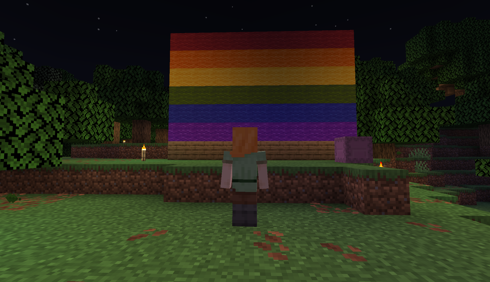
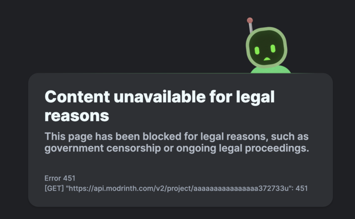

On 30 September 2025, the Minecraft modding platform Modrinth restricted access to four mods at the request of the Russian government. The next day, they reversed the decision. Over a month later, many important questions remain.

Minecraft is a popular sandbox video game originally released by Swedish programmer Markus Persson, also known as Notch, in 2009. In 2014, Persson sold the game to Microsoft for $2.5 billion
[1]. As a sandbox game, people have a large amount of freedom in deciding how they wish to play. One popular way to play Minecraft is using third party software (referred to as mods) to modify the game's behavior. These mods can add new features, change core mechanics, or simply improve performance. In order to make them easier to find, a variety of different websites have been created to host and index mods, including Modrinth.
Modrinth started out as Fabricate, a closed source website made by Jai Krishna Agrawal, also known as Geometrically, for indexing projects
[2][3][4]. Under pressure from the community, Geometrically open sourced Fabricate
[5]. In December 2020, a beta version of it was released under the name Modrinth, a portmanteau of "mod" and "labyrinth"
[6][54]. In 2021, Rinth, Inc was founded to own and operate Modrinth
[7]. The company is based out of Tempe, Arizona in the United States, but is formally registered in Delaware
[8][4]. In 2023, Modrinth released an app to allow users to easily download and manage mods
[9]. In 2024, they announced Modrinth Servers; a service for hosting modded Minecraft Java Edition servers
[10]. Modrinth's website states it has over 75,000 projects, which includes mods, resource packs, shaders, modpacks, data packs, and plugins for Minecraft Java Edition. Modrinth is considering expanding its platform to include a wider variety of Minecraft related features, such as hosting maps and skins, in addition to potentially hosting projects for other games
[11].
Russia is ranked as the worst nation in Europe for Queer rights by ILGA-Europe, the European branch of the International Lesbian, Gay, Bisexual, Trans, and Intersex Association
[12]. In 2013, Russia enacted a law banning people and companies from showing minors any content which depicts Queer people in a positive or neutral manner. In 2022, the law was expanded to all ages, effectively banning Queer content. Some Russian politicians citing the county's invasion of Ukraine as one motivation for the harsher crackdown
[13]. Soon after the law was enacted, Meta (owner of Facebook and Instagram) and Bytedance (owner of TikTok) were fined for refusing to remove Queer content
[14]. In 2023, Russia's Supreme Court designated the "international LGBT social movement" as an extremist organization
[15]. Since then, there have been numerous cases of Russians being prosecuted for posting pride flags on social media, with one person being prosecuted for a post made before the 2023 ruling. Human rights groups have warned these prosecutions may violate article 19 of the International Covenant on Civil and Political Rights, which Russia is party to
[16].
In October 2024, Sasha, a contributor to Modrinth, opened an issue titled "Implement geographic restrictions" in the Modrinth GitHub repository. In the post, he argues the harms of the entire Modrinth platform being banned over Queer content outweigh the harms of restricting access to certain projects which governments find objectionable. He proposed a system which would allow for both the mod author and Modrinth to restrict access to a project, either entirely blocking users in a specific geographic region or requiring age verification. Fully restricted projects would not be listed in search results for impacted users, and a 451 Unavailable for Legal Reasons status code would be returned when accessed. Some users criticized the proposal, with one stating Modrinth "should not negotiate with countries that infringe on basic human rights or censor LGBTQ+ content". The creator of the proposal responded by arguing it was better "to make small concessions just to ensure most creators' content availability for end users instead of taking a lazy position of 'standing the ground' [...] and getting entire regions barred from it"
[17].
Discussion largely died off after December 2024, and on 1 October 2025, Modrinth closed and locked the discussion. In a comment on the thread, Prospector stated "we've now decided with the community that Modrinth stands against censorship", and linked to Modrinth's article announcing the restoration of the mods it initially removed at the request of the Russian government
[17]. In a social media post on 2 October 2025, the original creator of the issue wrote "my favourite [sic] thing is when that website unquestionably and unarguably listened to a loud minority of their western users instead of actually asking people who are going to be affected by their decision"
[18]. He has not made any subsequent posts on the subject.
In late September 2025, Modrinth received an email from the Russian government. The email was a "standard boilerplate with a url in a placeholder"
[19] which listed four mods on the platform which the sender requested be restricted in Russia. The only rational given in the email was the mods were "Internet web-sites containing the information prohibited for public distribution in the Russian Federation"
[20]. They were given one day to comply or their website would be blocked in Russia
[21]. The email did not request Modrinth remove all Queer content from the platform
[20]. The Modrinth team spent 5 hours discussing the options, and while they did not reach unanimous support for complying, the majority agreed it was the best option
[22][21]. When a Russian IP tried to access any of the restricted mods, Modrinth returned a 451 Unavailable for Legal Reasons status code
[23]. They only blocked the project pages
[24]; the mods still appeared in search results
[25]. The owners of the mods were notified by email
[26][20]. After Modrinth informed the Russian government they had restricted the mods, they received a message stating the Russians could not verify the mods were restricted. They have not received any further messages
[20].

The email listed four mods to be restricted. Modrinth has chosen not to release the names of the mods as they are concerned the mod authors will face harassment
[27]. As of the time of posting, I do not believe the names of any of the mods are public, and I have been unable to find any of them. The mods are obscure, and not well known even in the Queer modding community. They did not show up when searching for "lgbt"
[28]. Prospector, a Modrinith employee, said they had never heard of any of the mods
[29]. Jade, a content moderator for Modrinth since August 2023 and developer of several mods on the platform, said she had heard of a couple of the mods
[30]. None of the mods received very high traffic
[31]. At least one of the mods was also available on CurseForge, another Minecraft modding platform
[32].
The decision to remove the mods was met with harsh backlash
[33]. The developer of the popular Sodium mod, JellySquid, wrote in a message on Discord that Modrinth had decided to "bend the knee to countries that systematically oppress and erase LGBTQ+ people"
[34]. In response to the censorship, they added a pride flag to the top of Sodium's project page on Modrinth
[35], which has since been removed
[36], and considered adding pride imagery to the mod itself. Contrary to public belief, they never threatened to remove their mods from Modrinth
[37]. The developer of Ender IO, a "full-featured tech mod", removed it from the platform in response to the censorship. After Modrinth reversed the decision, they reuploaded the mod
[38]. The developer of Industrial Foregoing also removed their mod in response, and reuploaded it after Modrinth's reversal
[39]. It is worth noting these views may not represent those of the entire community; while many people participated in the discussions, several of the mod authors I talked to were unaware of the decision.
The next day, Modrinth reversed the decision, stating "the decision to comply, even briefly, was a mistake"
[21]. Modrinth also posted links to the organization Rainbow Railroad on their social media, though these posts did not explicitly refer to the censorship
[40][41]. The reaction to the reversal was largely positive, though some stated they believed it would have been better for Modrinth to have just restricted the mods, and others still felt betrayed over the initial decision
[42][43][40].
As of 20 October 2025, Modrinth continued to receive requests from Russian IPs
[44]. Modrinth has said they have heard from some Russian users who say they are unable to access the website, but they are unsure how widespread the blocking is
[20]. Modrinth's website uses CloudFlare, which is a service which sits in-between a website and its users, offering performance improvements and protection from DDoS attacks. According to CloudFlare, some Russian Internet Service Providers (ISPs) are throttling traffic from CloudFlare's servers, rendering websites who use CloudFlare unreliable and often unusable
[45][46]. Even as far back as 2023, there were incidents of Modrinth's website being impacted by Russia's blocking of CloudFlare
[47]. It is possible this is the reason for these reports, but nether I nor likely even Modrinth can know for certain.
This entire incident received little attention outside the modding community; I have not seen any news source covering it. A few English YouTube channels covered it, most notably KasaiSora
[48][49], and some Russian channels uploaded videos about it
[50][51]. One modding-related blog posted about it
[52], and there were a few posts on Reddit. Beyond that, it received little attention.
I reached out to the Russian Embassy in Washington seeking comment from Roskomnadzor, Russia's internet regulation and censorship agency, on the matter. Despite repeated requests, I have not received any response. Roskomnadzor's English language website appears to be inaccessible from the United States.
In conclusion, Modrinth restricted access to four mods in response to a request from the Russian government, but reversed its decision the next day. This decision was very controversial inside the community, but received little coverage elsewhere. The names of the four mods remain unknown to the general public, and even Modrinth does not know why they were specifically targeted. It is unclear if the Russian government has blocked access to Modrinth.
Acknowledgments
Thanks to Modrinth for providing information for this article.
Thanks to JiroTimo, DentedLeft, GitRedFlower, Wolren, and Queen of the Bees for helping me in my quest to find the impacted mods.
Thanks to an anonymous friend who pointed out a source I had completely missed in my research.
Thanks to Blayung for their post on r/minecraft, which is how I learned of this.
Thanks to MomentariyModder; their blogpost on the subject alerted me to Ender IO and Industrial Foregoing's protest.
The opinions in this article are my own, and do not represent their positions on this subject. I was not compensated by Modrinth or the Russian government for this article. Due to the scope of this investigation, there may be some people I forgot to credit.
Image credits
Image 1: Original work of the author, iam-py-test. Released into the public domain in 2025.
Image 2: Image credit to prospector
[53]. Used here in compliance with fair use.
Citations
[1]: Minecraft sold: Microsoft buys Mojang for $2.5bn. https://www.theguardian.com/technology/2014/sep/15/microsoft-buys-minecraft-creator-mojang-for-25bn
[2]: Jai Agrawal. https://www.linkedin.com/in/jaiagr/
[3]: Modrinth - Organization. https://modrinth.com/organization/modrinth
[4]: Arizona Corporation Commission - Rinth Inc. https://ecorp.azcc.gov/BusinessSearch/BusinessInfo?entityNumber=23736201
[5]: What is Modrinth? https://modrinth.com/news/article/whats-modrinth/
[6]: Two years of Modrinth: a retrospective. https://modrinth.com/news/article/two-years-of-modrinth-history/
[7]: Search results for Rinth Inc on https://icis.corp.delaware.gov/ecorp/entitysearch/NameSearch.aspx
[8]: Privacy Policy - Modrinth. https://modrinth.com/legal/privacy
[9]: Introducing Modrinth App Beta. https://modrinth.com/news/article/modrinth-app-beta/
[10]: Host your own server with Modrinth Servers — now in beta. https://modrinth.com/news/article/modrinth-servers-beta/
[11]: How Modrinth Wants to Become The EVERYTHING Platform. https://www.youtube.com/watch?v=sKB-Zx0PM0o
[12]: Rainbow Map. https://rainbowmap.ilga-europe.org/ accessed on 2025-11-4
[13]: Vladimir Putin signs chilling 'LGBT propaganda law' expansion for all Russian citizens. https://www.thepinknews.com/2022/12/05/vladimir-putin-signs-lgbt-propaganda-law/
[14]: Russia fines Facebook, Instagram and TikTok under chilling 'LGBT+ propaganda' law. https://www.thepinknews.com/2022/04/27/russia-fines-facebook-instagram-and-tiktok-under-chilling-lgbt-propaganda-law/
[15]: Russia's Court Ban of the 'LGBTQ Movement' Is the Latest Global Move Against Inclusion. https://time.com/6342383/russias-court-ban-of-the-lgbtq-movement/
[16]: Russia: Rising Toll of LGBT 'Extremism' Designation. https://www.hrw.org/news/2025/06/30/russia-rising-toll-of-lgbt-extremism-designation
[17]: Implement geographic restrictions. https://github.com/modrinth/code/issues/2507
[18]: BlueSky post by brawaru.bsky.social. https://bsky.app/profile/brawaru.bsky.social/post/3m26zgmj5bk2p
[19]: Message by prospector in the Modrinth Discord. https://discord.com/channels/734077874708938864/1422755030699606170/1422763883025666232
[20]: Information provided to me by Modrinth by email
[21]: Standing By Our Values. https://modrinth.com/news/article/standing-by-our-values/
[22]: Message by jade.gay in the Modrinth Discord. https://discord.com/channels/734077874708938864/1422755030699606170/1422937390678540378
[23]: prospector/russia-blogpost. https://github.com/modrinth/code/pull/4459
[24]: Message by prospector in the Modrinth Discord. https://discord.com/channels/734077874708938864/1422755030699606170/1422760684210487356
[25]: Message by prospector in the Modrinth Discord. https://discord.com/channels/734077874708938864/1422755030699606170/1422796602845696161
[26]: Message by prospector in the Modrinth Discord. https://discord.com/channels/734077874708938864/1422755030699606170/1422767161838927963
[27]: Message by jade.gay in the Modrinth Discord. https://discord.com/channels/734077874708938864/1422755030699606170/1422769356726734929
[28]: Message by eroralive in the "gender" channel in the Hue discord server – to join go to https://discord.com/invite/w7PpGax9Bq; https://discord.com/channels/1003636176013492285/1003636176013492288/1423188848048869376
[29]: Message by Prospector in the Modrinth Discord server. https://discord.com/channels/734077874708938864/1422755030699606170/1422767428991057920
[30]: Message by jade.gay in the Modrinth Discord server. https://discord.com/channels/734077874708938864/1422755030699606170/1422767558280609835
[31]: Message by clx_ in the Modrinth Discord server. https://discord.com/channels/734077874708938864/1422755030699606170/1422933182407507968
[32]: Message by jade.gay in the Modrinth Discord server. https://discord.com/channels/734077874708938864/1422755030699606170/1422944605581742151
[33]: Message by saphire in Spectrum's Colourful World – join using https://discord.gg/EXU9XFXT8a. https://discord.com/channels/906264467636109333/1333209881385238560/1423412786716872734
[34]: Message by jellysquid3 in CaffeineMC – join using https://discord.com/invite/XXynmrT. https://discord.com/channels/602796788608401408/651120262129123330/1422965357928251473
[35]: Message by jellysquid3 in CaffeineMC – join using https://discord.com/invite/XXynmrT. https://discord.com/channels/602796788608401408/651120262129123330/1422976641260453888
[36]: Sodium. https://web.archive.org/web/20251026152328/https://modrinth.com/mod/sodium archived on 2025-10-26
[37]: Message by jellysquid3 in the Modrinth Discord. https://discord.com/channels/734077874708938864/1423100059632930898/1423323027159912458
[38]: Message by rover656 in EnderIO. https://discord.com/channels/373534853259329536/382959669892743168/1423002409814196295 – to join server go to https://discord.gg/4tPfwjn
[39]: Message by buuz135 in Industrial Foregoing. https://discord.com/channels/357597633566605313/938794841280761906/1422971308777537558 - to join server go to https://discord.gg/4tPfwjn
[40]: Post on BlueSky by Modrinth. https://bsky.app/profile/modrinth.com/post/3m23ysu4kpt22
[41]: Post on floss.social by Modrinth. https://floss.social/@modrinth/115296551177668937
[42]: Russia tries to remove LGBT mods from modrinth. https://www.reddit.com/r/Minecraft/comments/1nw4xpj/russia_tries_to_remove_lgbt_mods_from_modrinth/
[43]: Modrinth reverses decision to censor "some LGBTQ+ content". https://www.reddit.com/r/feedthebeast/comments/1nvou9m/modrinth_reverses_decision_to_censor_some_lgbtq/
[44]: Message by _clx in the Modrinth Discord. https://discord.com/channels/734077874708938864/734077874708938867/1429886148515201104
[45]: Russian Internet users are unable to access the open Internet. https://blog.cloudflare.com/russian-internet-users-are-unable-to-access-the-open-internet/
[46]: Message by lordpipe in the Modrinth Discord. https://discord.com/channels/734077874708938864/1423100059632930898/1423372755021205699
[47]: Tracking: Russian users unable to connect to Modrinth's meta servers with the app. https://github.com/modrinth/code/issues/858
[48]: mods were banned in minecraft. https://www.youtube.com/shorts/O525LfY6q-s
[49]: Modrinth Is Being Censored. https://www.youtube.com/watch?v=2R9ZqwTvmHQ
[50]: 💚Modrinth заблокируют в РФ (возможно) | Minecraft. https://www.youtube.com/shorts/LjCqA616nu8
[51]: РКН хочет ЗАБАНИТЬ САЙТ из-за МОДА В МАЙНКРАФТЕ • Братишкин про Modrinth Minecraft. https://www.youtube.com/watch?v=n0TUz5dU55c
[52]: Situation on Modrinth. https://momentariymodder.com/blog/situation-on-modrinth
[53]: Message by prospector in the Modrinth Discord. https://discord.com/channels/734077874708938864/1422755030699606170/1422763119125725205
[54]: Modrinth Team - Q&A with the Modrinth Team [BlanketCon 22] at 6:13. https://youtu.be/CESefuuObVs?t=373